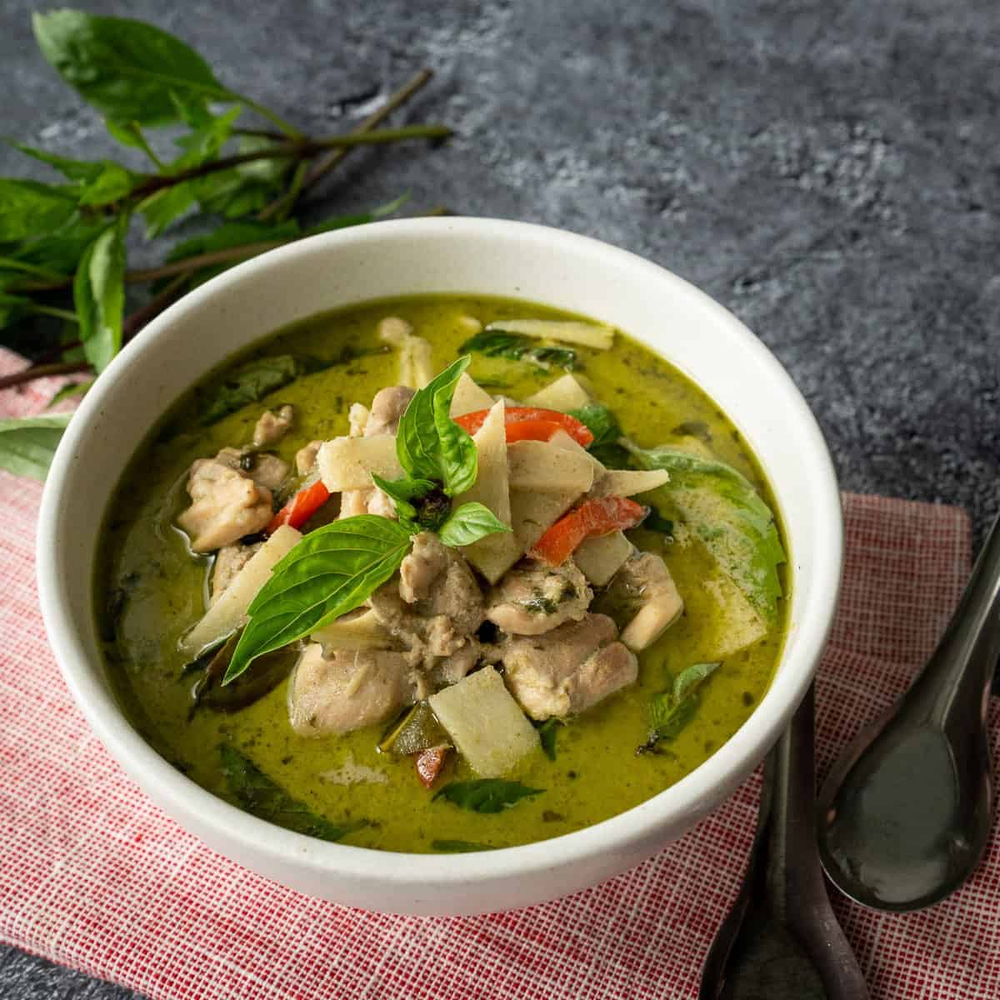

Green Curry Recipe

Green curry is a delicious traditional Thai curry. The name green curry comes from the color of the dish and the peppers that bring it's flavor.
Ingredients
- Thai basil
- Bamboo shotos
- Red bell pepper
- Green curry paste
- Makrut lime leaves
- Coconut milk
- Fish sauce
- Palm sugar
- Boneless skinless chicken thighs
- Chicken stock, unsalted
Steps:
- Pound green curry paste and Thai basil leaves
- Get the paste as fine as possible
- Reduce the coconut milk until very think
- Add the curry paste and saute for a few minutes
- Toss chicken with the curry paste
- Add coconut milk
- Add makrut lime leaves
- Add fish sauce and palm sugar
- Simmer for 10-15 minutes until the chicken is fork tender
- Add bamboo shoots and cook for a minute until the curry comes to a boil
- Stir in red bell pepper and turn off the heat
- Add Thai basil and stir just until wilted
- The green curry is now ready to serve with jasmine rice